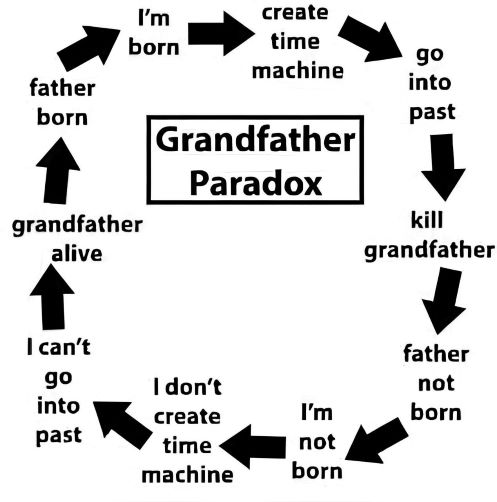

The Grandfather Paradox
„The Grandfather Paradox‟ is one of those famous paradoxes of physics which theoretically challenges the concept of time travel. Imagine, John travels to the past and kills his biological grandfather during his teenage. That is exactly where the paradox starts working! If the grandfather dies before his marriage, then the father should not be born. Then HOW DOES JOHN EXIST? How was he born? And, if we conclude that John does not exist due to his grandfather's early death, then WHO KILLED HIS GRANDFATHER? In mid 1980s, famous Russian astrophysicist Igor Novikov established “the principle of self-consistency”, which states that one may travel to the past but can't change it, he can only watch the past events as if they are recorded films. Therefore, John can meet his grandfather but the universe will prevent him from killing his grandfather. For example, whenever John will try to kill him, his weapon will not work, or any other situation will arise to protect his grandfather. But Novikov couldn't explain how this self-consistency is enforced. Also it implies a strongly deterministic universe where free will is an illusion. Another famous concept is “the multiverse theory”, which allows time travel only to a parallel universe. Therefore, If John kills his grandfather in another universe and returns to the original one, then the paradox appears to be solved, as his genetic lineage was not interrupted here, but this can't be called proper “time travel” as he didn't go to his original past.
← Back to This Year’s Articles